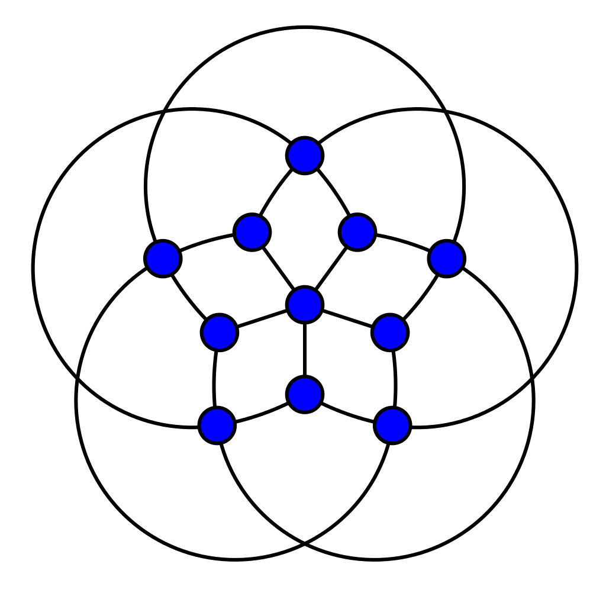

The Big Line Big Clique Conjecture
Introduction

The goal of this webpage is to create a tool for any user to play with and try to understand deeper what the conjecture is about.
What is the big-line-big-clique conjecture? The conjecture states that for all integers k, l ≥ 2 there is an integer n such that every set of at least n points in the plane contains at least l collinear points (vertices on the same line) or k pairwise visible points this means that the clique number of the visibility graph is equal to k.
On the right image we can see the visibility graph of the integer lattice. Here k = 4and l = 6. We can notice that here the chromatic number is equal to the clique number.
Kára et al. proved the conjecture first for k ≤ 4 and all l. And the latest proof is from Abel et al. and it stands for k = 5 and all l. The conjecture is still open for k=6 and l=4.
As clarification you can see on the left the visibility graph of the integer lattice. We can see here k=4 because this is the maximum clique of this graph (note that adjacent means connected by an edge and for example point (1,1) and point (2,5) are adjacent). And l=6 because all rows and columns have 6 collinear points and the two diagonals also have 6 collinear points and there are no 7 points that are collinear in the graph.

The Conjecture
The first step to understanding the conjecture is knowing what a clique is. A clique of a graph G is a complete subgraph of G, and the clique of largest possible size is referred to as a maximum clique (which has size known as the clique number ω(G)). A maximal clique is a clique that cannot be extended by including one more adjacent vertex, meaning it is not a subset of a larger clique. Maximum cliques are therefore maximal cliqued (but not necessarily vice versa).
Here is an explanatory video of what a clique is.
What is a visibility graph? A visibility graph is a graph where all vertices that can "see" each other are connected by an edge more formally, two vertices v, w ∈ P are connected by an edge if there is no other vertex in P on the edge connecting u and v. If we take the integer lattice from above, we first start with a graph without any edge, and for every vertex a1 in the graph we will add an edge going from a1 to the second vertex a2, if there is no vertex between a1 and a2. Now we do this for every vertex and we get our graph. Notice that visually there is no difference between a visibility graph and a plain complete graph because vertices that are not connected with each other are still connected by multiple straight edges with vertices in between.
Collinear points are pretty easy to understand. Collinear points are points that all lie in the same line. To find the "l"-value from the algorithm we basically have to find the straight line that goes through the maximal amount of vertices in the graph.
Now let's understand the trivial cases. Let's take a graph a place one vertex on it. Obviously k=l=1 because we can find a line going through one vertex (the only vertex of the graph) and we can find a 1-clique (a k-clique is a clique of size 1). If we now add a second vertex we will always be able to draw a line going through both vertices (so l=2) and both vertices will always be pairwise visible, so there will be a 2-clique and k=2.
So if we throw this into the conjecture that states : For all integers k, l ≥ 2 there is an integer n such that every set of at least n points in the plane contains at least l collinear points (vertices on the same line) or k pairwise visible.
We get that for k=l=2, n=2 because any set of two points (vertices) will have at least 2 collinear or two pairwise visible points (it will actually have both).
We can extend this to k=3 and l=3. Let's continue with our example with 2 vertices. If we add one more vertex we can chose to make it collinear with the previous ones or not. If we make it collinear we get l=3 and if we make it not collinear we get a 3-clique in the visibility graph and thus k=3. So this time k=l=n=3. In fact all cases where l=3 (or more generally l ≤ 3) are trivial because once the graph has two vertices we always have to add a new vertex not collinear with two of the previous ones, so it will always be visible by all other vertices and thus every added vertex will increment k by one. Therefore of we take l=3, for any k, we get n=k.
Now the question is if for any pair of numbers k,l we can find a number n such that we know for sure that every visibillity graph of n vertices will have at least l collinear points or k pairwise visible points. We still don't know if it is true for k=6 and l=4 and higher values.
On the chromatic number 
The chromatic number of a graph is the minimum number of colours we need to colour a graph where each adjacent vertices have different colours.
It is obvious that the chromatic number has the clique number as lower bound just take the maximum clique of a graph and because all vertices are mutually adjacent, we will need a different color for each vertex to colour it properly. On the image to the right we can see Grötzsch graph which contains no triangles and has thus a maximum clique of size 2. Yet it's chromatic number is 4 proving that the chromatic and clique number are different.
An interesting observation is that for the integer lattice, the chromatic number and the clique number coincide. Whether there is a similar relationship for all visibility graphs is a fundamental open problem.
References
- Zachary Abel, Brad Ballinger, Prosenjit Bose, Sébastien Collette, Vida Dujmovic, Ferran Hurtado, ScottKominers, Stefan Langerman, Attila Por, and David Wood. Every large point set contains many collinearpoints or an empty pentagon. volume 27, pages 99–102, 01 2009.
- Jan Kára, Attila Por, and David Wood. On the chromatic number of the visibility graph of a set of points in the plane. Discrete & Computational Geometry, 34:497–506, 09 2005.
- Wu, Qinghua & Hao, Jin-Kao. (2015). A review on algorithms for maximum clique problems. European Journal of Operational Research. 242. 693-709. 10.1016/j.ejor.2014.09.064.
- Babel, L. A fast algorithm for the maximum weight clique problem. Computing 52, 31–38 (1994).
- Carraghan, R., & Pardalos, P.M. (1990). An exact algorithm for the maximumclique problem. Operations Research Letters, 9(6), 375–382.
- Žerovnik, J. (1994). A randomized algorithm for k-colorability. Discrete Mathematics, 131(1–3), 379–393.